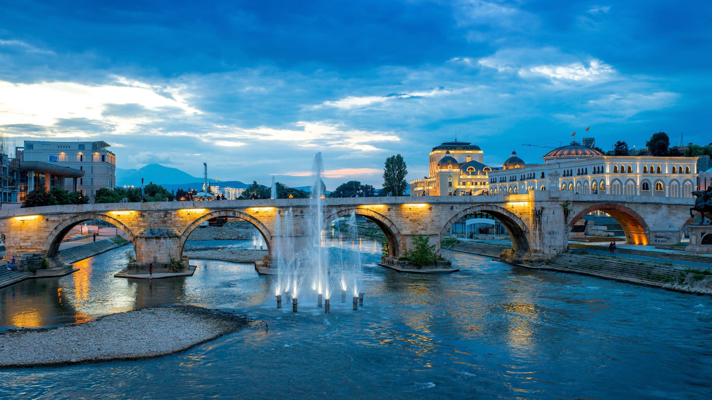

Skopje is also an affordable destination that offers visitors a unique experience without breaking the bank. The city is known for its friendly locals who are always happy to share their culture and traditions with visitors. Skopje's beautiful parks and outdoor spaces make it the perfect destination for nature lovers, with stunning views of the Vardar River and the surrounding mountains. Whether you're interested in history, culture, or outdoor adventures, Skopje has something to offer everyone. With its unique blend of historical landmarks, modern attractions, and natural beauty, Skopje is definitely worth a visit.
